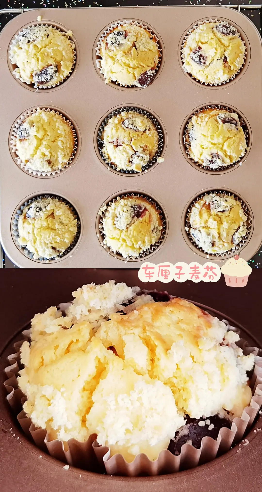
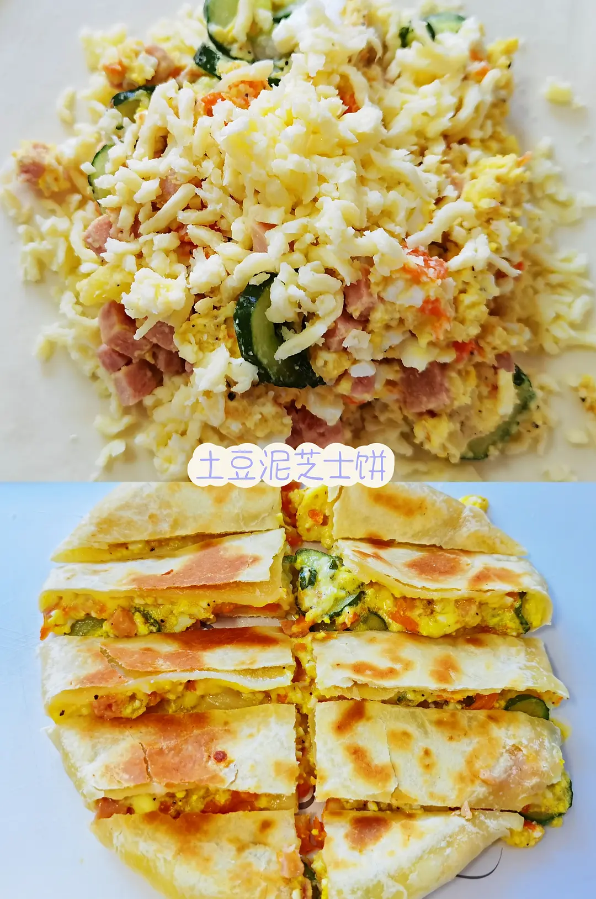
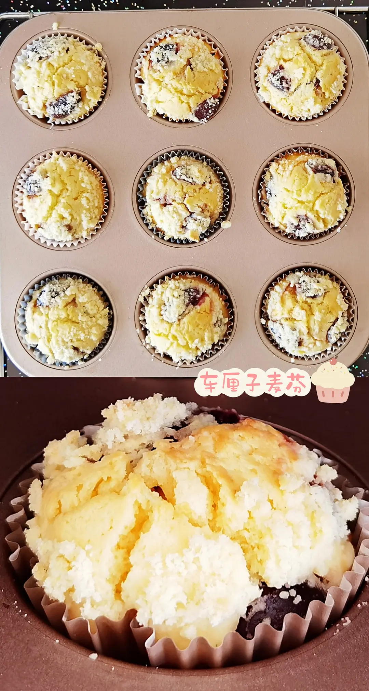
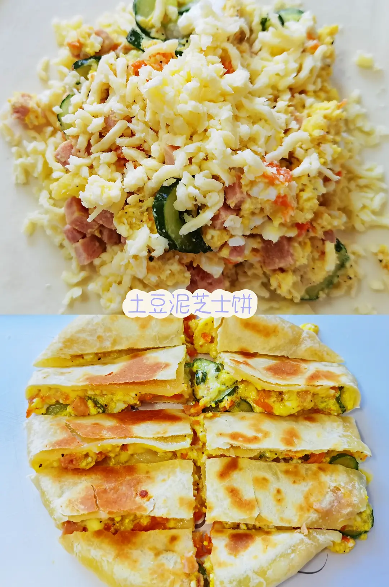
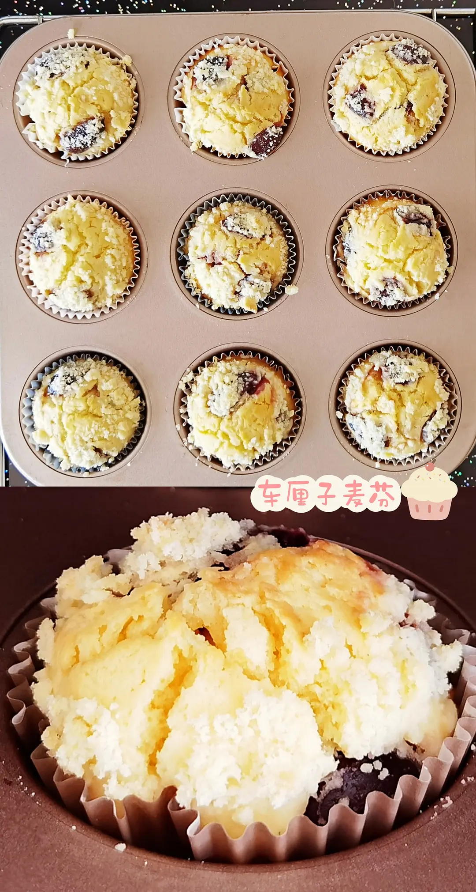
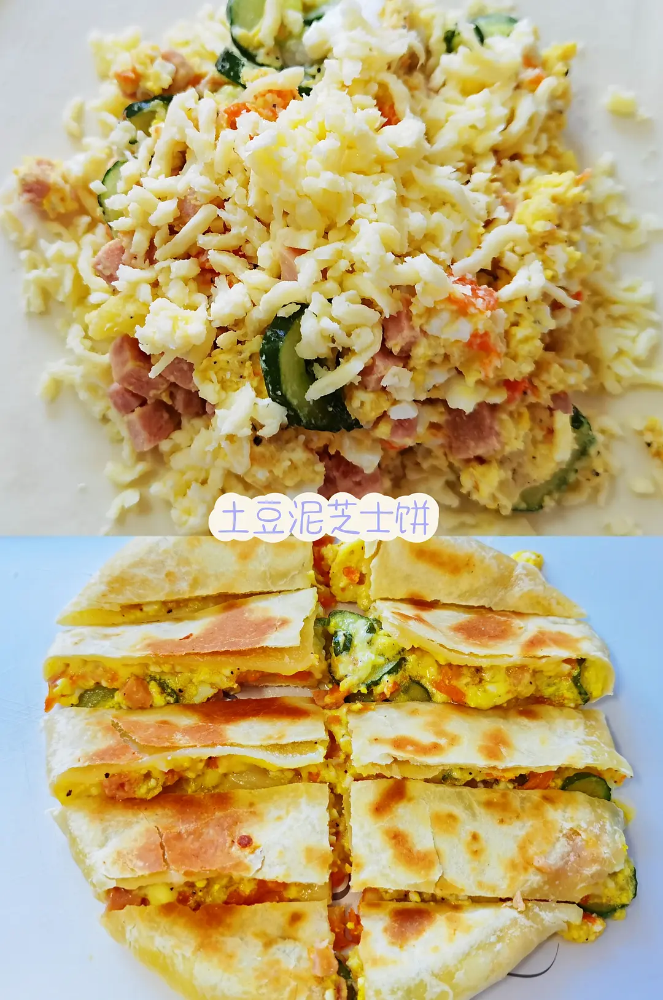

Group in Douban
Explore
Culture
Photography
Fashion
Life
Technology
My cooking diary!
 The food I cooked during the quarantine!
During the quarantine time, the only thing I can do is cooking. Thanks for the recipes online, not only I learned to cook traditional food, but also now I can cook foreign recipes and desserts!
 
The food I cooked during the quarantine!

The food I cooked during the quarantine!